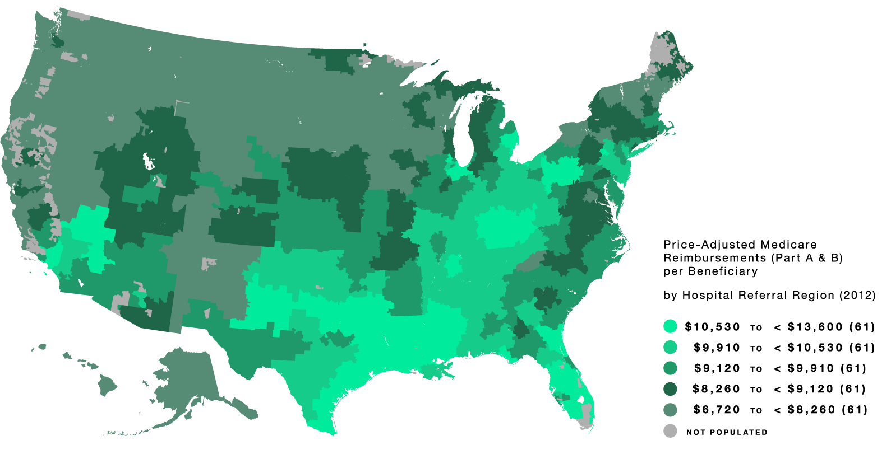
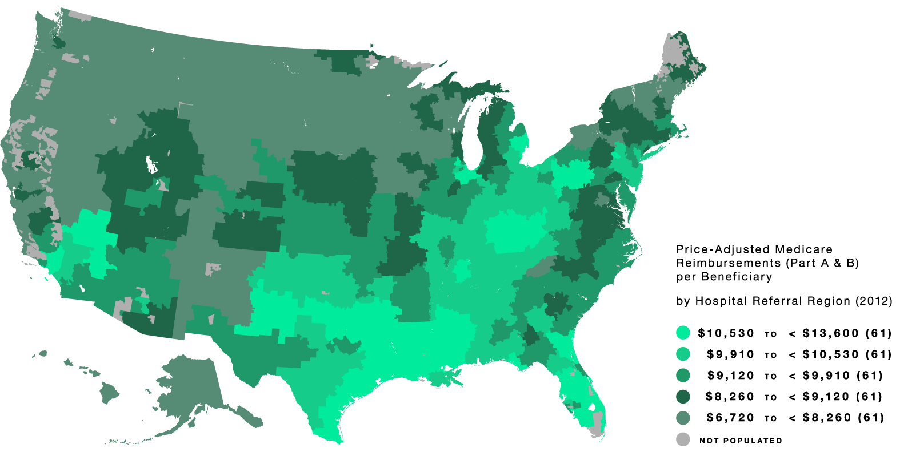

contact information
- Phone: (603) 646-2535
- Fax: (603) 646 2122
- jon.skinner@dartmouth.edu
James O. Freedman Presidential
Professor of Economics:
Economics Department
6106 Rockefeller Hall
Dartmouth College
Hanover, NH 03755-3514
Professor of Community and
Family Medicine:
The Dartmouth Institute for
Health Policy & Clinical Practice
Geisel School of Medicine
Hanover, NH 03755
 
